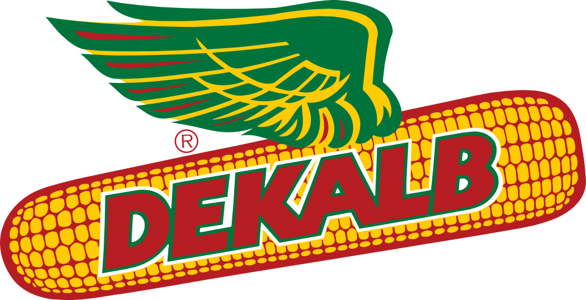
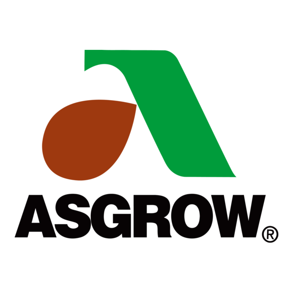
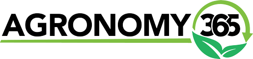

Dekalb & Asgrow
Corn and soybeans
Seed options for corn and soybean acres with placement support by field and management goal.
Products & services
Domnick Seeds brings together seed, biologicals, crop nutrition, sampling, spraying, scripting, and chemistry support for growers.
Featured products
These offerings are based on the Domnick Seed Offerings document and can be expanded with product sheets, rates, availability, or seasonal notes.
Seed options for corn and soybean acres with placement support by field and management goal.

Enlist E3 soybean options for growers looking to match trait platform, maturity, and field fit.

Nitrogen-focused biological support that can be discussed as part of a whole-season fertility plan.

Treatment and in-furrow options to help protect early growth and support stand establishment.
What we offer
Keep the plan simple, local, and field-specific with support across seed selection, crop inputs, agronomy planning, and in-season decisions.

Hybrid selection, trait packages, and field placement guidance for local yield goals.
Learn more
Soybean options matched to maturity, field history, and weed management needs.
Learn moreForage, small grain, cover crop, and organic seed options for diverse rotations.
Learn morePractical herbicide, fungicide, and crop protection conversations tied to field pressure.
Learn moreCrop nutrition and biological tools that support plant health and seasonal performance.
Learn moreNitrogen-focused biological options for growers looking to strengthen fertility plans.
Learn more
Season-long planning based on acres, rotation, timing, product fit, variable-rate needs, and grower goals.
Learn moreDigital field data tools that help organize maps, yield history, and in-season decisions.
Learn moreActionable sampling information to help guide fertility, crop nutrition, and timing.
Learn moreNext step